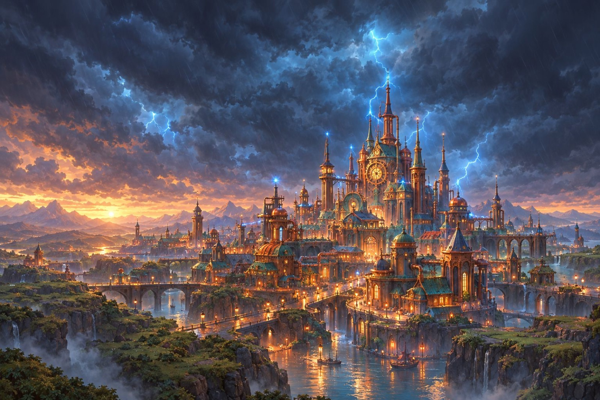
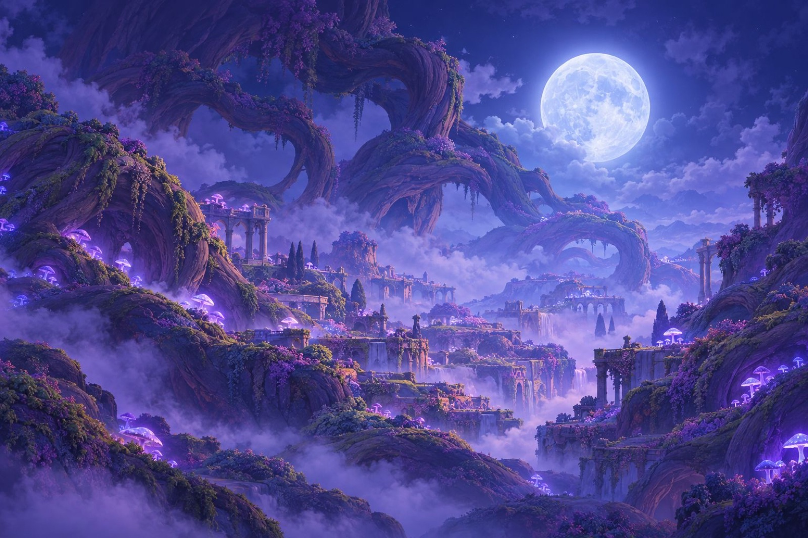
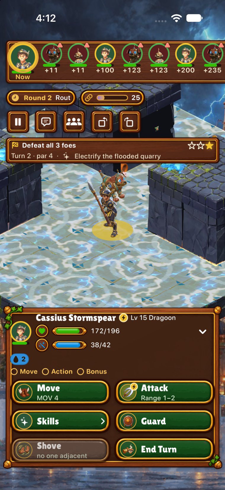

The Arena
Two sides. Four heroes each.
No mercy, no servers.
The Arena lives in Grovehaven — a station in the Snug Root tavern where you field your real collection against another player's, on a mirrored board of any biome, under the game's own battle rules.
Modes
Four ways to get punched by a person
Quick Match
Random opponents matched by team power, widening the band after twenty seconds. A 30-second clock per unit-turn; at zero your AI plays it. If your opponent goes quiet for fifteen seconds, your AI covers their moves so the battle never stalls.
Challenge a Friend
Invite through Game Center — iMessage, contacts, nearby — and the Arena offers SharePlay inside a FaceTime call. Pick Live, or Take turns.
Take turns (async)
A friend match that survives you both closing the app. The match carries the battle's own message log; every unit-turn is saved. When you reopen, the opponent's moves play out from exactly where you left off. Twenty-four hours per turn is a forfeit; resigning is always allowed.
Practice
Loopback and AI-mirrored matches in every build, so the Arena is playable on a plane, and a hidden Dev mode plays two AIs against each other for the test suite (one hundred matches, 7,912 state checkpoints — all equal).
Under the hood
Deterministic lockstep, or: how a match fits in a text message
The battle engine is a pure, deterministic function: the same setup plus the same actions plays out identically on every device. So the Arena doesn't send state, unit lists or damage — it sends actions. About ten bytes per move, about five kilobytes for a whole match. Both sides run the full battle locally and compare a hash of the state after every turn.
Match setup uses commit-reveal: both sides hash their teams and the board seed before either sees the other's, so nobody can snipe your party. The protocol version, a content hash and an engine fingerprint must match or the hello politely refuses — different builds simply can't join each other's matches.
Team validation happens before the fight: your four heroes, their levels, weapons, Charms and Crests are checked against the content rules on both machines. Ownership isn't provable without a server — Arena honesty is part of being invited to the tavern.
A desync is technically impossible; if the hashes ever disagreed, the match is declared no contest and both states are logged for the devs. — Arena design notes

Rating & seasons
Rated by Glicko-2. Dressed by the grove.
Quick Matches are rated: an account-wide Arena rating starts at 1,500 and moves by Glicko-2, with the opponent's rating agreed between both machines during the handshake. Six-week seasons carry titles — Sprout · Grove Warden · Thornguard · Wildheart · Accord Champion — and the leaderboard is your Game Center friends' board.
Wins pay a little: Acorns and shards on your first win of the day, a trickle after, capped at the account level. Friend matches and async matches are never rated. The Arena is for showing off, not for grinding.

The Arena was built to one test: could two people, on five kinds of device, play one honest match with nothing between them but Game Center's pipes? It plays. Now go be insufferable about your rating.